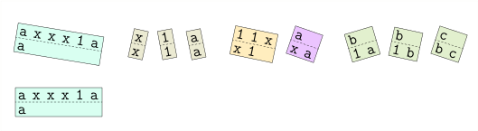
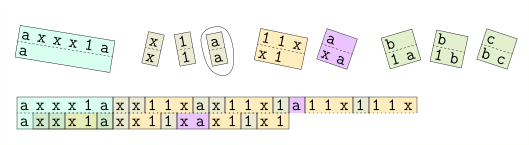
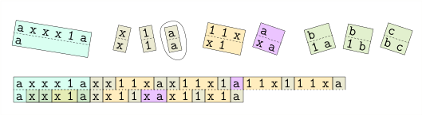
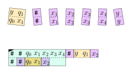
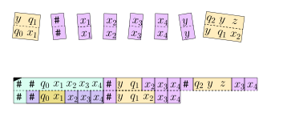

8.7 Mehr über Unentscheidbarkeit: Das Postsche Korrespondenzproblem./wly/08/07-Post-correspondence-problem.wly:2:11
Die Unentscheidbarkeit des Halteproblems mag auf den./wly/08/07-Post-correspondence-problem.wly:4:5 ersten Blick esoterisch anmuten. Es taucht ja nur auf,./wly/08/07-Post-correspondence-problem.wly:5:5 weil die Problemstellung irgendwie selbstreferenziell./wly/08/07-Post-correspondence-problem.wly:6:5 ist. Das täuscht: Unentscheidbarkeit taucht in vielen./wly/08/07-Post-correspondence-problem.wly:7:5 Bereichen der theoretischen Informatik und der./wly/08/07-Post-correspondence-problem.wly:8:5 Mathematik auf, auch bei Fragestellungen, die auf den./wly/08/07-Post-correspondence-problem.wly:9:5 ersten Blick nichts mit Turingmaschinen zu tun haben./wly/08/07-Post-correspondence-problem.wly:10:5 und völlig harmlos wirken. Wie zum Beispiel das rein./wly/08/07-Post-correspondence-problem.wly:11:5 kombinatorische ./wly/08/07-Post-correspondence-problem.wly:12:5Postsche Korrespondenzproblem../wly/08/07-Post-correspondence-problem.wly:12:22 Im./wly/08/07-Post-correspondence-problem.wly:12:53 Postschen Korrespondenzproblem haben wir endlich viele./wly/08/07-Post-correspondence-problem.wly:13:5 Kärtchen (auch ./wly/08/07-Post-correspondence-problem.wly:14:5Kacheln./wly/08/07-Post-correspondence-problem.wly:14:21 genannt) gegeben, die oben./wly/08/07-Post-correspondence-problem.wly:14:29 und unten jeweils ein Wort haben. Wir müssen die./wly/08/07-Post-correspondence-problem.wly:15:5 Kärtchen so nebeneinander legen, dass oben und unten./wly/08/07-Post-correspondence-problem.wly:16:5 das gleiche Wort entsteht; jedes Kärtchen kann./wly/08/07-Post-correspondence-problem.wly:17:5 beliebig oft verwendet werden. Im folgenden Beispiel./wly/08/07-Post-correspondence-problem.wly:18:5 wird das beige-farbene Kärtchen zweimal verwendet:./wly/08/07-Post-correspondence-problem.wly:19:5
public/img/pcp/example-wikipedia/01.svg
 public/img/pcp/example-wikipedia/02.svg
public/img/pcp/example-wikipedia/02.svg
 public/img/pcp/example-wikipedia/03.svg
public/img/pcp/example-wikipedia/03.svg
 public/img/pcp/example-wikipedia/04.svg
public/img/pcp/example-wikipedia/04.svg
public/img/pcp/example-wikipedia/05.svg
 public/img/pcp/example-wikipedia/06.svg
public/img/pcp/example-wikipedia/06.svg
public/img/pcp/example-wikipedia/07.svg
 public/img/pcp/example-wikipedia/08.svg
public/img/pcp/example-wikipedia/08.svg
 public/img/pcp/example-wikipedia/09.svg
public/img/pcp/example-wikipedia/09.svg
(Diese Beispielinstanz ist von./wly/08/07-Post-correspondence-problem.wly:33:5 ./wly/08/07-Post-correspondence-problem.wly:34:5Wikipedia./wly/08/07-Post-correspondence-problem.wly:34:6;./wly/08/07-Post-correspondence-problem.wly:34:75 die graphische Darstellung stammt von mir.) Schauen./wly/08/07-Post-correspondence-problem.wly:35:5 wir uns ein weiteres, komplizierteres Beispiel an../wly/08/07-Post-correspondence-problem.wly:36:5 Hier führen wir eine Sonderregel ein, nämlich dass man./wly/08/07-Post-correspondence-problem.wly:37:5 mit der türkisen Kachel (der ersten) anfangen muss:./wly/08/07-Post-correspondence-problem.wly:38:5
 public/img/pcp/example-expo/01.svg
public/img/pcp/example-expo/01.svg
public/img/pcp/example-expo/02.svg
public/img/pcp/example-expo/03.svg
 public/img/pcp/example-expo/04.svg
public/img/pcp/example-expo/04.svg
 public/img/pcp/example-expo/05.svg
public/img/pcp/example-expo/05.svg
 public/img/pcp/example-expo/06.svg
public/img/pcp/example-expo/06.svg
 public/img/pcp/example-expo/07.svg
public/img/pcp/example-expo/07.svg
 public/img/pcp/example-expo/08.svg
public/img/pcp/example-expo/08.svg
 public/img/pcp/example-expo/09.svg
public/img/pcp/example-expo/09.svg
public/img/pcp/example-expo/10.svg
 public/img/pcp/example-expo/11.svg
public/img/pcp/example-expo/11.svg
 public/img/pcp/example-expo/12.svg
public/img/pcp/example-expo/12.svg
 public/img/pcp/example-expo/13.svg
public/img/pcp/example-expo/13.svg
 public/img/pcp/example-expo/14.svg
public/img/pcp/example-expo/14.svg
 public/img/pcp/example-expo/15.svg
public/img/pcp/example-expo/15.svg
 public/img/pcp/example-expo/16.svg
public/img/pcp/example-expo/16.svg
 public/img/pcp/example-expo/17.svg
public/img/pcp/example-expo/17.svg
 public/img/pcp/example-expo/18.svg
public/img/pcp/example-expo/18.svg
 public/img/pcp/example-expo/19.svg
public/img/pcp/example-expo/19.svg
 public/img/pcp/example-expo/20.svg
public/img/pcp/example-expo/20.svg
 public/img/pcp/example-expo/21.svg
public/img/pcp/example-expo/21.svg
 public/img/pcp/example-expo/22.svg
public/img/pcp/example-expo/22.svg
 public/img/pcp/example-expo/23.svg
public/img/pcp/example-expo/23.svg
public/img/pcp/example-expo/24.svg
public/img/pcp/example-expo/25.svg
Können Sie das zweie PCP-Puzzle lösen und zu Ende./wly/08/07-Post-correspondence-problem.wly:68:5 führen? Informell sehen wir bereits: um das Puzzle zu./wly/08/07-Post-correspondence-problem.wly:69:5 lösen, müssen wir die ./wly/08/07-Post-correspondence-problem.wly:70:5$\texttt{x}$./wly/08/07-Post-correspondence-problem.wly:70:27 loswerden. Das./wly/08/07-Post-correspondence-problem.wly:70:39 geht nur, indem wir jedes ./wly/08/07-Post-correspondence-problem.wly:71:5$\texttt{x}$./wly/08/07-Post-correspondence-problem.wly:71:31 mit Hilfe des./wly/08/07-Post-correspondence-problem.wly:71:43 fünften (beigefarbenen) Kärtchens nach rechts./wly/08/07-Post-correspondence-problem.wly:72:5 schieben, bis es auf ein ./wly/08/07-Post-correspondence-problem.wly:73:5$\texttt{a}$./wly/08/07-Post-correspondence-problem.wly:73:30 stösst, wo wir./wly/08/07-Post-correspondence-problem.wly:73:42 es mit dem sechsten (violetten) verschwinden lassen./wly/08/07-Post-correspondence-problem.wly:74:5 können. Jedes ./wly/08/07-Post-correspondence-problem.wly:75:5$\texttt{x}$./wly/08/07-Post-correspondence-problem.wly:75:19 verdoppelt also die Anzahl./wly/08/07-Post-correspondence-problem.wly:75:31 der Einsen. Dieses PCP "berechnet" in gewisser Weise./wly/08/07-Post-correspondence-problem.wly:76:5 die Funktion ./wly/08/07-Post-correspondence-problem.wly:77:5$n \mapsto 2^n$./wly/08/07-Post-correspondence-problem.wly:77:18../wly/08/07-Post-correspondence-problem.wly:77:33 In ganz ähnlicher Weise./wly/08/07-Post-correspondence-problem.wly:77:33 können wir zu jeder Turingmaschine ein PCP-Puzzle./wly/08/07-Post-correspondence-problem.wly:78:5 bauen, das diese Maschine "simuliert". Aber eins nach./wly/08/07-Post-correspondence-problem.wly:79:5 dem anderen. Wir beginnen mit Terminologie../wly/08/07-Post-correspondence-problem.wly:80:5
Definition 8.7.1./wly/08/07-Post-correspondence-problem.wly:82:5 ./wly/08/07-Post-correspondence-problem.wly:82:5 Sei ./wly/08/07-Post-correspondence-problem.wly:83:9$\Sigma$./wly/08/07-Post-correspondence-problem.wly:83:13 ein endliches Alphabet../wly/08/07-Post-correspondence-problem.wly:83:21
-
Eine ./wly/08/07-Post-correspondence-problem.wly:87:17Kachel./wly/08/07-Post-correspondence-problem.wly:87:23 (auch ./wly/08/07-Post-correspondence-problem.wly:87:30Kärtchen./wly/08/07-Post-correspondence-problem.wly:87:38 genannt) ist ein Paar./wly/08/07-Post-correspondence-problem.wly:87:47 ./wly/08/07-Post-correspondence-problem.wly:88:17$(\alpha : \beta) \in \Sigma^* \times \Sigma^*$./wly/08/07-Post-correspondence-problem.wly:88:17../wly/08/07-Post-correspondence-problem.wly:88:64 Hier./wly/08/07-Post-correspondence-problem.wly:88:64 bezeichnet ./wly/08/07-Post-correspondence-problem.wly:89:17$\alpha$./wly/08/07-Post-correspondence-problem.wly:89:28 das Wort auf der oberen Hälfte./wly/08/07-Post-correspondence-problem.wly:89:36 der Kachel und ./wly/08/07-Post-correspondence-problem.wly:90:17$\beta$./wly/08/07-Post-correspondence-problem.wly:90:32 das auf der unteren../wly/08/07-Post-correspondence-problem.wly:90:39
-
Ein PCP-Puzzle (oder einfach nur Puzzle in diesem./wly/08/07-Post-correspondence-problem.wly:93:17 Zusammenhang) ist eine endliche Menge ./wly/08/07-Post-correspondence-problem.wly:94:17$S$./wly/08/07-Post-correspondence-problem.wly:94:55 von./wly/08/07-Post-correspondence-problem.wly:94:58 Kacheln../wly/08/07-Post-correspondence-problem.wly:95:17
-
Eine Kachelung ist eine Folge ./wly/08/07-Post-correspondence-problem.wly:98:17$s$./wly/08/07-Post-correspondence-problem.wly:98:47 von Kacheln aus ./wly/08/07-Post-correspondence-problem.wly:98:50$S$./wly/08/07-Post-correspondence-problem.wly:98:67,./wly/08/07-Post-correspondence-problem.wly:98:70 ./wly/08/07-Post-correspondence-problem.wly:98:70 also./wly/08/07-Post-correspondence-problem.wly:99:17
$$ \begin{align*} s = (\alpha_{1} : \beta_{1}) (\alpha_{2} : \beta_{2}) \dots (\alpha_{m} : \beta_{m}) \end{align*} $$./wly/08/07-Post-correspondence-problem.wly:101:17Für eine Kachelung ./wly/08/07-Post-correspondence-problem.wly:106:17$s$./wly/08/07-Post-correspondence-problem.wly:106:36 definieren wir den ./wly/08/07-Post-correspondence-problem.wly:106:39oberen./wly/08/07-Post-correspondence-problem.wly:106:60 Teil./wly/08/07-Post-correspondence-problem.wly:107:17 ./wly/08/07-Post-correspondence-problem.wly:107:22$\top(s)$./wly/08/07-Post-correspondence-problem.wly:107:23 und den ./wly/08/07-Post-correspondence-problem.wly:107:32unteren Teil./wly/08/07-Post-correspondence-problem.wly:107:42 ./wly/08/07-Post-correspondence-problem.wly:107:55$\bottom(s)$./wly/08/07-Post-correspondence-problem.wly:107:56:./wly/08/07-Post-correspondence-problem.wly:107:68
$$ \begin{align*} \top(s)&:= \alpha_1 \alpha_2 \dots \alpha_m \\ \bottom(s)&:= \beta_1 \beta_2 \dots \beta_m \\ \end{align*} $$./wly/08/07-Post-correspondence-problem.wly:109:17 -
Eine Kachelung ./wly/08/07-Post-correspondence-problem.wly:115:17$s$./wly/08/07-Post-correspondence-problem.wly:115:32 ist eine ./wly/08/07-Post-correspondence-problem.wly:115:35Lösung./wly/08/07-Post-correspondence-problem.wly:115:46 des Puzzles,./wly/08/07-Post-correspondence-problem.wly:115:53 wenn ./wly/08/07-Post-correspondence-problem.wly:116:17$\top(s) = \bottom(s)$./wly/08/07-Post-correspondence-problem.wly:116:22 gilt../wly/08/07-Post-correspondence-problem.wly:116:44
Illustrieren wir die Definitionen noch einmal anhand./wly/08/07-Post-correspondence-problem.wly:118:5 des ersten Beispiels:./wly/08/07-Post-correspondence-problem.wly:119:5
public/img/pcp/example-wikipedia/04.svg
Das Puzzle besteht aus drei Kacheln:./wly/08/07-Post-correspondence-problem.wly:126:5
$$
\begin{align*}
k_1 &:= (a : baa) \\
k_2 &:= (ab : aa) \\
k_3 &:= (bba : bb) \ .
\end{align*}
$$./wly/08/07-Post-correspondence-problem.wly:128:5
Oben sehen wir eine Kachelung ./wly/08/07-Post-correspondence-problem.wly:134:5$s := k_3 k_2 k_3$./wly/08/07-Post-correspondence-problem.wly:134:35 und./wly/08/07-Post-correspondence-problem.wly:134:53
$$
\begin{align*}
\top(s) &= bbaabbba \\
\bottom(s) &= bbaabb \ .
\end{align*}
$$./wly/08/07-Post-correspondence-problem.wly:136:5
Die Kachelung ./wly/08/07-Post-correspondence-problem.wly:141:5$k_3 k_2 k_3$./wly/08/07-Post-correspondence-problem.wly:141:19 ist noch keine Lösung,./wly/08/07-Post-correspondence-problem.wly:141:32 aber ./wly/08/07-Post-correspondence-problem.wly:142:5$k_3 k_2 k_3 k_1$./wly/08/07-Post-correspondence-problem.wly:142:10 ist eine. Für ein festes./wly/08/07-Post-correspondence-problem.wly:142:27 ./wly/08/07-Post-correspondence-problem.wly:143:5$\Sigma$./wly/08/07-Post-correspondence-problem.wly:143:5 können wir natürlich ein PCP-Puzzle./wly/08/07-Post-correspondence-problem.wly:143:13 codieren, indem wir die Menge ./wly/08/07-Post-correspondence-problem.wly:144:5$S$./wly/08/07-Post-correspondence-problem.wly:144:35 der Kacheln./wly/08/07-Post-correspondence-problem.wly:144:38 codieren, z.B. über dem Alphabet./wly/08/07-Post-correspondence-problem.wly:145:5 ./wly/08/07-Post-correspondence-problem.wly:146:5$\Sigma \cup \{(, :, )\}$./wly/08/07-Post-correspondence-problem.wly:146:5../wly/08/07-Post-correspondence-problem.wly:146:30 Das erste Beispielpuzzle./wly/08/07-Post-correspondence-problem.wly:146:30 ./wly/08/07-Post-correspondence-problem.wly:147:5$S$./wly/08/07-Post-correspondence-problem.wly:147:5 wäre dann./wly/08/07-Post-correspondence-problem.wly:147:8
$$
\begin{align*}
\enc(S) := (a:baa)(ab:aa)(bba:bb)
\end{align*}
$$./wly/08/07-Post-correspondence-problem.wly:149:5
Somit können wir das Postsche Korrespondenzproblem./wly/08/07-Post-correspondence-problem.wly:153:5 formal als Sprache definieren:./wly/08/07-Post-correspondence-problem.wly:154:5
$$
\begin{align*}
{\rm PCP} := \{ \enc(S) \ | \ S \textnormal{ ist ein PCP-Puzzle und hat eine Lösung} \} \ .
\end{align*}
$$./wly/08/07-Post-correspondence-problem.wly:156:5
Theorem 8.7.2./wly/08/07-Post-correspondence-problem.wly:160:5 ./wly/08/07-Post-correspondence-problem.wly:160:5 PCP ist unentscheidbar../wly/08/07-Post-correspondence-problem.wly:161:9
Beweis. Wir zeigen: wenn PCP entscheidbar ./wly/08/07-Post-correspondence-problem.wly:164:9wäre./wly/08/07-Post-correspondence-problem.wly:164:44,./wly/08/07-Post-correspondence-problem.wly:164:49 dann ./wly/08/07-Post-correspondence-problem.wly:164:49wäre./wly/08/07-Post-correspondence-problem.wly:164:57 ./wly/08/07-Post-correspondence-problem.wly:164:62 auch ./wly/08/07-Post-correspondence-problem.wly:165:9$\halt$./wly/08/07-Post-correspondence-problem.wly:165:14 entscheidbar. Da letzteres jedoch./wly/08/07-Post-correspondence-problem.wly:165:21 unentscheidbar ist, muss auch PCP unentscheidbar sein../wly/08/07-Post-correspondence-problem.wly:166:9 Mehr im Detail: für eine Turingmaschine ./wly/08/07-Post-correspondence-problem.wly:167:9$M$./wly/08/07-Post-correspondence-problem.wly:167:49 und ein./wly/08/07-Post-correspondence-problem.wly:167:52 Eingabewort ./wly/08/07-Post-correspondence-problem.wly:168:9$x$./wly/08/07-Post-correspondence-problem.wly:168:21 konstruieren wir ein Puzzle ./wly/08/07-Post-correspondence-problem.wly:168:24$S$./wly/08/07-Post-correspondence-problem.wly:168:53,./wly/08/07-Post-correspondence-problem.wly:168:56 so./wly/08/07-Post-correspondence-problem.wly:168:56 dass ./wly/08/07-Post-correspondence-problem.wly:169:9$S$./wly/08/07-Post-correspondence-problem.wly:169:14 genau dann eine Lösung hat, wenn ./wly/08/07-Post-correspondence-problem.wly:169:17$M(x)$./wly/08/07-Post-correspondence-problem.wly:169:51 ./wly/08/07-Post-correspondence-problem.wly:169:57 akzeptiert. Ein Entscheidungsalgorithmus für das PCP./wly/08/07-Post-correspondence-problem.wly:170:9 könnte somit auch ./wly/08/07-Post-correspondence-problem.wly:171:9$\halt$./wly/08/07-Post-correspondence-problem.wly:171:27 entscheiden. Wie so oft in./wly/08/07-Post-correspondence-problem.wly:171:34 ähnlichen Beweisen machen wir einen Zwischenschritt../wly/08/07-Post-correspondence-problem.wly:172:9 Das ./wly/08/07-Post-correspondence-problem.wly:173:9Modifizierte Postsche Korrespondenzproblem (MPCP)./wly/08/07-Post-correspondence-problem.wly:173:14 ./wly/08/07-Post-correspondence-problem.wly:174:9 ist genau das gleiche wie das PCP, nur dass es in./wly/08/07-Post-correspondence-problem.wly:174:10 ./wly/08/07-Post-correspondence-problem.wly:175:9$S$./wly/08/07-Post-correspondence-problem.wly:175:9 eine markierte Startkachel gibt und jede Lösung./wly/08/07-Post-correspondence-problem.wly:175:12 mit dieser Startkachel beginnen muss. Es ist also ein./wly/08/07-Post-correspondence-problem.wly:176:9 "strengeres" Problem als das PCP../wly/08/07-Post-correspondence-problem.wly:177:9
Lemma 8.7.3./wly/08/07-Post-correspondence-problem.wly:179:9 ./wly/08/07-Post-correspondence-problem.wly:179:9 Gegeben ein MPCP-Puzzle ./wly/08/07-Post-correspondence-problem.wly:180:13$S$./wly/08/07-Post-correspondence-problem.wly:180:37,./wly/08/07-Post-correspondence-problem.wly:180:40 so können wir ein./wly/08/07-Post-correspondence-problem.wly:180:40 (normales) PCP-Puzzle ./wly/08/07-Post-correspondence-problem.wly:181:13$S'$./wly/08/07-Post-correspondence-problem.wly:181:35 erstellen, mit der./wly/08/07-Post-correspondence-problem.wly:181:39 Eigenschaft, dass ./wly/08/07-Post-correspondence-problem.wly:182:13$S$./wly/08/07-Post-correspondence-problem.wly:182:31 eine Lösung hat genau dann,./wly/08/07-Post-correspondence-problem.wly:182:34 wenn ./wly/08/07-Post-correspondence-problem.wly:183:13$S'$./wly/08/07-Post-correspondence-problem.wly:183:18 eine Lösung hat../wly/08/07-Post-correspondence-problem.wly:183:22
Beweis. Im MPCP zwingen uns bereits die Spielregeln, mit der./wly/08/07-Post-correspondence-problem.wly:186:13 markierten Startkachel zu beginnen. Wir müssen nun,./wly/08/07-Post-correspondence-problem.wly:187:13 von ./wly/08/07-Post-correspondence-problem.wly:188:13$S$./wly/08/07-Post-correspondence-problem.wly:188:17 ausgehend, ein ähnliches Puzzle bauen, in./wly/08/07-Post-correspondence-problem.wly:188:20 welchem es zwar keine Startkachel gibt, aber dennoch./wly/08/07-Post-correspondence-problem.wly:189:13 nur eine Kachel überhaupt als Anfang in Frage kommt../wly/08/07-Post-correspondence-problem.wly:190:13 Das geht mit einem Trick, in dem wir jede Kachel durch./wly/08/07-Post-correspondence-problem.wly:191:13 eine "gesternte Variante" ersetzen:./wly/08/07-Post-correspondence-problem.wly:192:13
 public/img/pcp/mpcp-to-pcp-01.svg
public/img/pcp/mpcp-to-pcp-01.svg
wobei * ein neues Symbol ist. Offensichtlich kann./wly/08/07-Post-correspondence-problem.wly:199:13 keine solche Kachel ganz links stehen, da ja dann./wly/08/07-Post-correspondence-problem.wly:200:13 bereits das erste Symbol nicht übereinstimmen würde../wly/08/07-Post-correspondence-problem.wly:201:13 Für die markierte Startkachel erstellen wir eine./wly/08/07-Post-correspondence-problem.wly:202:13 weitere "gesternte" Variante:./wly/08/07-Post-correspondence-problem.wly:203:13
 public/img/pcp/mpcp-to-pcp-02.svg
public/img/pcp/mpcp-to-pcp-02.svg
Die gesternten Kacheln zwingen uns nun dazu, mit der./wly/08/07-Post-correspondence-problem.wly:210:13 markierten zu beginnen, da diese ja die einzige ist,./wly/08/07-Post-correspondence-problem.wly:211:13 wo das erste Symbol oben und unten übereinstimmt. Wir./wly/08/07-Post-correspondence-problem.wly:212:13 können nun jede ./wly/08/07-Post-correspondence-problem.wly:213:13$S'$./wly/08/07-Post-correspondence-problem.wly:213:29 -Kachelung in eine ./wly/08/07-Post-correspondence-problem.wly:213:33$S$./wly/08/07-Post-correspondence-problem.wly:213:53-Kachelung./wly/08/07-Post-correspondence-problem.wly:213:56 ./wly/08/07-Post-correspondence-problem.wly:213:56 übersetzen; allerdings steht bei der ./wly/08/07-Post-correspondence-problem.wly:214:13$S$./wly/08/07-Post-correspondence-problem.wly:214:50-Kachelung./wly/08/07-Post-correspondence-problem.wly:214:53 ./wly/08/07-Post-correspondence-problem.wly:214:53 rechts unten ein *, rechts oben aber nicht. Wir./wly/08/07-Post-correspondence-problem.wly:215:13 erstellen nun eine weitere Kachel, die am rechten Rand./wly/08/07-Post-correspondence-problem.wly:216:13 und nur dort eingesetzt werden kann:./wly/08/07-Post-correspondence-problem.wly:217:13
Sie sehen: die letzte Kachel ist die einzige, die am./wly/08/07-Post-correspondence-problem.wly:224:13 rechten Rand stehen kann. Sollte nun das MPCP-Puzzle./wly/08/07-Post-correspondence-problem.wly:225:13 ./wly/08/07-Post-correspondence-problem.wly:226:13$S$./wly/08/07-Post-correspondence-problem.wly:226:13 eine Lösung haben (die dann laut Spielregeln auch./wly/08/07-Post-correspondence-problem.wly:226:16 mit der markierten Startkachel beginnt), so können wir./wly/08/07-Post-correspondence-problem.wly:227:13 daraus eine Lösung des PCP-Puzzles ./wly/08/07-Post-correspondence-problem.wly:228:13$S'$./wly/08/07-Post-correspondence-problem.wly:228:48 konstruieren,./wly/08/07-Post-correspondence-problem.wly:228:52 indem wir einfach jede ./wly/08/07-Post-correspondence-problem.wly:229:13$S$./wly/08/07-Post-correspondence-problem.wly:229:36 -Kachel durch die./wly/08/07-Post-correspondence-problem.wly:229:39 entsprechende ./wly/08/07-Post-correspondence-problem.wly:230:13$S'$./wly/08/07-Post-correspondence-problem.wly:230:27 -Kachel ersetzen (Vorsicht: sollte./wly/08/07-Post-correspondence-problem.wly:230:31 die markierte Startkachel in der ./wly/08/07-Post-correspondence-problem.wly:231:13$S$./wly/08/07-Post-correspondence-problem.wly:231:46-Lösung./wly/08/07-Post-correspondence-problem.wly:231:49 mehrfach./wly/08/07-Post-correspondence-problem.wly:231:49 vorkommen, so muss in ./wly/08/07-Post-correspondence-problem.wly:232:13$S'$./wly/08/07-Post-correspondence-problem.wly:232:35 anfangs die "türkise"./wly/08/07-Post-correspondence-problem.wly:232:39 Version der Kachel genommen werden, mit * oben und./wly/08/07-Post-correspondence-problem.wly:233:13 unten; jedes weitere Exemplar muss dann in ./wly/08/07-Post-correspondence-problem.wly:234:13$S'$./wly/08/07-Post-correspondence-problem.wly:234:56 durch./wly/08/07-Post-correspondence-problem.wly:234:60 die violette türkise Kachel ersetzt werden). Ganz zum./wly/08/07-Post-correspondence-problem.wly:235:13 Schluss hängen wir noch die Kachel für den rechten./wly/08/07-Post-correspondence-problem.wly:236:13 Rand an. Sollte umgekehrt das PCP-Puzzle ./wly/08/07-Post-correspondence-problem.wly:237:13$S'$./wly/08/07-Post-correspondence-problem.wly:237:54 eine./wly/08/07-Post-correspondence-problem.wly:237:58 Lösung haben, so erhalten wir eine Lösung des MPCP./wly/08/07-Post-correspondence-problem.wly:238:13 Puzzles ./wly/08/07-Post-correspondence-problem.wly:239:13$S$./wly/08/07-Post-correspondence-problem.wly:239:21,./wly/08/07-Post-correspondence-problem.wly:239:24 indem wir alle Sterne herausstreichen./wly/08/07-Post-correspondence-problem.wly:239:24 und die rechte Endkachel entfernen../wly/08/07-Post-correspondence-problem.wly:240:13A\(\square\)
Nun wissen wir also, dass wir den "Spieler" zwingen./wly/08/07-Post-correspondence-problem.wly:242:9 können, mit einer bestimmten Kachel zu beginnen, ohne./wly/08/07-Post-correspondence-problem.wly:243:9 dies explizit in die Spielregeln aufnehmen zu müssen../wly/08/07-Post-correspondence-problem.wly:244:9 Unser Ziel ist nun: gegeben eine Turingmaschine ./wly/08/07-Post-correspondence-problem.wly:245:9$M$./wly/08/07-Post-correspondence-problem.wly:245:57 ./wly/08/07-Post-correspondence-problem.wly:245:60 und ein Inputwort ./wly/08/07-Post-correspondence-problem.wly:246:9$x$./wly/08/07-Post-correspondence-problem.wly:246:27,./wly/08/07-Post-correspondence-problem.wly:246:30 darauf aufbauend ein./wly/08/07-Post-correspondence-problem.wly:246:30 MPCP-Puzzle ./wly/08/07-Post-correspondence-problem.wly:247:9$S$./wly/08/07-Post-correspondence-problem.wly:247:21 zu konstruieren, das genau dann eine./wly/08/07-Post-correspondence-problem.wly:247:24 Lösung hat, wenn ./wly/08/07-Post-correspondence-problem.wly:248:9$M(x) = \texttt{accept}$./wly/08/07-Post-correspondence-problem.wly:248:26 gilt../wly/08/07-Post-correspondence-problem.wly:248:50 Erinneren wir uns: eine ./wly/08/07-Post-correspondence-problem.wly:249:9Konfiguration./wly/08/07-Post-correspondence-problem.wly:249:34 einer./wly/08/07-Post-correspondence-problem.wly:249:48 Turingmaschine ist eine Folge./wly/08/07-Post-correspondence-problem.wly:250:9
$$
\begin{align*}
w_1 w_2 \dots w_{j-1} q w_j \dots w_m
\end{align*}
$$./wly/08/07-Post-correspondence-problem.wly:252:9
mit ./wly/08/07-Post-correspondence-problem.wly:256:9$w_i \in \Gamma$./wly/08/07-Post-correspondence-problem.wly:256:13 und ./wly/08/07-Post-correspondence-problem.wly:256:29$q \in Q$./wly/08/07-Post-correspondence-problem.wly:256:34../wly/08/07-Post-correspondence-problem.wly:256:43 Die Bedeutung./wly/08/07-Post-correspondence-problem.wly:256:43 ist, dass auf dem Band das Wort ./wly/08/07-Post-correspondence-problem.wly:257:9$w_1 w_2 \dots w_m$./wly/08/07-Post-correspondence-problem.wly:257:41 ./wly/08/07-Post-correspondence-problem.wly:257:60 steht, die Turingmaschine im Zustand ./wly/08/07-Post-correspondence-problem.wly:258:9$q$./wly/08/07-Post-correspondence-problem.wly:258:46 ist und der./wly/08/07-Post-correspondence-problem.wly:258:49 Schreib-Lese-Kopf über den Zeichen ./wly/08/07-Post-correspondence-problem.wly:259:9$w_j$./wly/08/07-Post-correspondence-problem.wly:259:44 steht. Wir./wly/08/07-Post-correspondence-problem.wly:259:49 schreiben also den Zustand unmittelbar ./wly/08/07-Post-correspondence-problem.wly:260:9links./wly/08/07-Post-correspondence-problem.wly:260:49 von dem./wly/08/07-Post-correspondence-problem.wly:260:55 Zeichen, über dem er steht. Wenn das Eingabewort./wly/08/07-Post-correspondence-problem.wly:261:9 ./wly/08/07-Post-correspondence-problem.wly:262:9$x_1 \dots x_n$./wly/08/07-Post-correspondence-problem.wly:262:9 und ./wly/08/07-Post-correspondence-problem.wly:262:24$q_0 \in Q$./wly/08/07-Post-correspondence-problem.wly:262:29 der Startzustand,./wly/08/07-Post-correspondence-problem.wly:262:40 dann ist./wly/08/07-Post-correspondence-problem.wly:263:9
$$
\begin{align*}
C_0 := q_0 x_1 \dots x_n
\end{align*}
$$./wly/08/07-Post-correspondence-problem.wly:265:9
die Startkonfiguration. Die Berechnung einer./wly/08/07-Post-correspondence-problem.wly:269:9 Turingmaschine ist nun eine Folge von Konfigurationen,./wly/08/07-Post-correspondence-problem.wly:270:9 die wir mit dem ./wly/08/07-Post-correspondence-problem.wly:271:9$\#$./wly/08/07-Post-correspondence-problem.wly:271:25 -Zeichen separieren, also./wly/08/07-Post-correspondence-problem.wly:271:29
$$
\begin{align*}
\#\# C_0 \# C_1 \# C_2 \# C_3 \# \dots \# C_t
\end{align*}
$$./wly/08/07-Post-correspondence-problem.wly:273:9
Zwei aufeinanderfolgende Konfigurationen./wly/08/07-Post-correspondence-problem.wly:277:9 ./wly/08/07-Post-correspondence-problem.wly:278:9$C_i, C_{i+1}$./wly/08/07-Post-correspondence-problem.wly:278:9 unterscheiden sich nur in der./wly/08/07-Post-correspondence-problem.wly:278:23 unmittelbaren Umgebung des Schreib-Lese-Kopfes. Der./wly/08/07-Post-correspondence-problem.wly:279:9 Rest ist in beiden Konfigurationen identisch. Die Idee./wly/08/07-Post-correspondence-problem.wly:280:9 ist nun, zuerst eine Startkachel./wly/08/07-Post-correspondence-problem.wly:281:9
 public/img/pcp/halt-to-pcp-01.svg
public/img/pcp/halt-to-pcp-01.svg
zu bauen. Wir sehen: oben "steht etwas über", und./wly/08/07-Post-correspondence-problem.wly:288:9 zwar genau die Startkonfiguration. Wir wollen nun./wly/08/07-Post-correspondence-problem.wly:289:9 weitere Kacheln entwerfen, die es dem Spieler./wly/08/07-Post-correspondence-problem.wly:290:9 erlauben, unten auch die Konfiguration zu legen, ihn./wly/08/07-Post-correspondence-problem.wly:291:9 dabei allerdings zwingen, oben die Folgekonfiguration./wly/08/07-Post-correspondence-problem.wly:292:9 zu legen. Hierfür brauchen wir "Kopierkacheln", die es./wly/08/07-Post-correspondence-problem.wly:293:9 uns erlauben, Zeichen in die Folgekonfiguration zu./wly/08/07-Post-correspondence-problem.wly:294:9 kopieren und "Kopf-Kacheln", die die Aktion am./wly/08/07-Post-correspondence-problem.wly:295:9 Schreib-Lese-Kopf simulieren../wly/08/07-Post-correspondence-problem.wly:296:9
$$
\begin{align*}
\delta(q_0, x_1) = (q_1, y, \texttt{R})
\end{align*}
$$./wly/08/07-Post-correspondence-problem.wly:298:9
ist, dann würden wir folgende Kachel erzeugen und wie./wly/08/07-Post-correspondence-problem.wly:302:9 folgt einsetzen:./wly/08/07-Post-correspondence-problem.wly:303:9
 public/img/pcp/step-right/01.svg
public/img/pcp/step-right/01.svg
 public/img/pcp/step-right/02.svg
public/img/pcp/step-right/02.svg
 public/img/pcp/step-right/03.svg
public/img/pcp/step-right/03.svg
public/img/pcp/step-right/04.svg
public/img/pcp/step-right/05.svg
 public/img/pcp/step-right/06.svg
public/img/pcp/step-right/06.svg
 public/img/pcp/step-right/07.svg
public/img/pcp/step-right/07.svg
 public/img/pcp/step-right/08.svg
public/img/pcp/step-right/08.svg
Was geschieht nun? Für das Symbol ./wly/08/07-Post-correspondence-problem.wly:316:9$q_1$./wly/08/07-Post-correspondence-problem.wly:316:43,./wly/08/07-Post-correspondence-problem.wly:316:48 das ja einen./wly/08/07-Post-correspondence-problem.wly:316:48 Zustand bezeichnet, gibt es keine Kopierkachel. Wenn./wly/08/07-Post-correspondence-problem.wly:317:9 nun beispielsweise./wly/08/07-Post-correspondence-problem.wly:318:9
$$
\begin{align*}
\delta(q_1, x_2) = (q_3, z, \texttt{L})
\end{align*}
$$./wly/08/07-Post-correspondence-problem.wly:320:9
gilt, dann müssten wir den Kopf wieder nach links./wly/08/07-Post-correspondence-problem.wly:324:9 verschieben, und er würde wiederum ganz am Anfang der./wly/08/07-Post-correspondence-problem.wly:325:9 Konfiguration stehen. Es war also ein Fehler, ./wly/08/07-Post-correspondence-problem.wly:326:9$y$./wly/08/07-Post-correspondence-problem.wly:326:55 per./wly/08/07-Post-correspondence-problem.wly:326:58 Kopierkachel zu kopieren. Wir machen es rückgängig und./wly/08/07-Post-correspondence-problem.wly:327:9 legen eine der Regel./wly/08/07-Post-correspondence-problem.wly:328:9 ./wly/08/07-Post-correspondence-problem.wly:329:9$\delta(q_1, x_2) = (q_3, z, \texttt{L})$./wly/08/07-Post-correspondence-problem.wly:329:9 ./wly/08/07-Post-correspondence-problem.wly:329:50 entsprechende Kopfkachel:./wly/08/07-Post-correspondence-problem.wly:330:9
 public/img/pcp/step-left/01.svg
public/img/pcp/step-left/01.svg
 public/img/pcp/step-left/02.svg
public/img/pcp/step-left/02.svg
 public/img/pcp/step-left/03.svg
public/img/pcp/step-left/03.svg
public/img/pcp/step-left/04.svg
 public/img/pcp/step-left/05.svg
public/img/pcp/step-left/05.svg
Hier brauchen wir halt eine Kopfkachel./wly/08/07-Post-correspondence-problem.wly:340:9 ./wly/08/07-Post-correspondence-problem.wly:341:9$(q_2yz:yq_1x_2)$./wly/08/07-Post-correspondence-problem.wly:341:9 für ./wly/08/07-Post-correspondence-problem.wly:341:26jedes./wly/08/07-Post-correspondence-problem.wly:341:32 Bandsymbol ./wly/08/07-Post-correspondence-problem.wly:341:38$y$./wly/08/07-Post-correspondence-problem.wly:341:50,./wly/08/07-Post-correspondence-problem.wly:341:53 da die./wly/08/07-Post-correspondence-problem.wly:341:53 Regel immer anzuwenden ist, egal, welches Symbol ./wly/08/07-Post-correspondence-problem.wly:342:9$y$./wly/08/07-Post-correspondence-problem.wly:342:58 ./wly/08/07-Post-correspondence-problem.wly:342:61 links vom Schreib-Lese-Kopf steht. Fassen wir./wly/08/07-Post-correspondence-problem.wly:343:9 zusammen, was wir bis jetzt gesehen haben. Wir./wly/08/07-Post-correspondence-problem.wly:344:9 konstruieren Kopierkacheln ./wly/08/07-Post-correspondence-problem.wly:345:9$(x:x)$./wly/08/07-Post-correspondence-problem.wly:345:36,./wly/08/07-Post-correspondence-problem.wly:345:43 die es dem./wly/08/07-Post-correspondence-problem.wly:345:43 Spieler erlauben, die Konfiguration zu kopieren;./wly/08/07-Post-correspondence-problem.wly:346:9 Kopfkacheln, die den Spieler zwingen, in der Umgebung./wly/08/07-Post-correspondence-problem.wly:347:9 des Schreib-Lese-Kopfes den Regeln der Turingmaschine./wly/08/07-Post-correspondence-problem.wly:348:9 zu folgen; und eine Startkachel, die die./wly/08/07-Post-correspondence-problem.wly:349:9 Startkonfiguration abbildet. Also:./wly/08/07-Post-correspondence-problem.wly:350:9
Wir sind noch nicht ganz fertig. Wir brauchen noch./wly/08/07-Post-correspondence-problem.wly:357:9 Regeln für den Fall, dass der Schreib-Lese-Kopf am./wly/08/07-Post-correspondence-problem.wly:358:9 Rand des Bandinhaltes steht, konkret also die./wly/08/07-Post-correspondence-problem.wly:359:9 "Umgebung" des Kopfes ein ./wly/08/07-Post-correspondence-problem.wly:360:9$\texttt{#}$./wly/08/07-Post-correspondence-problem.wly:360:35 -Zeichen./wly/08/07-Post-correspondence-problem.wly:360:47 beinhaltet. Wir können entweder weitere Kopf-Kacheln./wly/08/07-Post-correspondence-problem.wly:361:9 entwerfen, die diese Fälle behandeln, oder aber./wly/08/07-Post-correspondence-problem.wly:362:9 "Bandwrweiterungskacheln", die uns erlauben, der./wly/08/07-Post-correspondence-problem.wly:363:9 Konfiguration ./wly/08/07-Post-correspondence-problem.wly:364:9$C$./wly/08/07-Post-correspondence-problem.wly:364:23 links oder rechts ein Leersymbol./wly/08/07-Post-correspondence-problem.wly:364:26 ./wly/08/07-Post-correspondence-problem.wly:365:9$\_$./wly/08/07-Post-correspondence-problem.wly:365:9 anzuhängen. Ich überlasse es an dieser Stelle./wly/08/07-Post-correspondence-problem.wly:365:13 dem Leser / der Leserin, die Details hierfür./wly/08/07-Post-correspondence-problem.wly:366:9 auszuarbeiten. Ganz zum Schluss müssen wir noch./wly/08/07-Post-correspondence-problem.wly:367:9 beschreiben, was geschieht, wenn die Maschine in den./wly/08/07-Post-correspondence-problem.wly:368:9 akzeptierenden Zustand ./wly/08/07-Post-correspondence-problem.wly:369:9$q^*$./wly/08/07-Post-correspondence-problem.wly:369:32 wechselt. Wir erschaffen./wly/08/07-Post-correspondence-problem.wly:369:37 Kacheln, die erlauben, alle Bandsymbole zu löschen,./wly/08/07-Post-correspondence-problem.wly:370:9 bis das Band leer ist:./wly/08/07-Post-correspondence-problem.wly:371:9
 public/img/pcp/tile-delete-symbols.svg
public/img/pcp/tile-delete-symbols.svg
und ganz am Schluss eine Kachel ./wly/08/07-Post-correspondence-problem.wly:378:9$(\# : q^* \# \#)$./wly/08/07-Post-correspondence-problem.wly:378:41 ,./wly/08/07-Post-correspondence-problem.wly:378:59 um alles abzuschließen. Die letzten zwei Schritte./wly/08/07-Post-correspondence-problem.wly:379:9 sehen dann so aus:./wly/08/07-Post-correspondence-problem.wly:380:9
 public/img/pcp/finish-00.svg
public/img/pcp/finish-00.svg
 public/img/pcp/finish-01.svg
public/img/pcp/finish-01.svg
 public/img/pcp/finish-03.svg
public/img/pcp/finish-03.svg
Strenggenommen müssten wir jetzt beweisen, dass das./wly/08/07-Post-correspondence-problem.wly:388:9 MPCP-Puzzle genau dann lösbar ist, wenn die./wly/08/07-Post-correspondence-problem.wly:389:9 Turingmaschine akzeptiert. Hierfür könnten wir zum./wly/08/07-Post-correspondence-problem.wly:390:9 Beispiel zeigen, dass, wenn ./wly/08/07-Post-correspondence-problem.wly:391:9$s$./wly/08/07-Post-correspondence-problem.wly:391:37 eine Kachelung ist,./wly/08/07-Post-correspondence-problem.wly:391:40 in welcher ./wly/08/07-Post-correspondence-problem.wly:392:9$\top(s)$./wly/08/07-Post-correspondence-problem.wly:392:20 und ./wly/08/07-Post-correspondence-problem.wly:392:29$\bottom(s)$./wly/08/07-Post-correspondence-problem.wly:392:34 beide auf dem./wly/08/07-Post-correspondence-problem.wly:392:46 Zeichen ./wly/08/07-Post-correspondence-problem.wly:393:9$\#$./wly/08/07-Post-correspondence-problem.wly:393:17 enden und wenn ./wly/08/07-Post-correspondence-problem.wly:393:21$\bottom(s)$./wly/08/07-Post-correspondence-problem.wly:393:37 nicht das./wly/08/07-Post-correspondence-problem.wly:393:49 Zeichen ./wly/08/07-Post-correspondence-problem.wly:394:9$q^*$./wly/08/07-Post-correspondence-problem.wly:394:17 enthält, dann ist./wly/08/07-Post-correspondence-problem.wly:394:22
$$
\begin{align*}
\top(s)&= \#\# C_0 \# C_1 \# \dots \# C_{j+1}\# \\
\bottom(s)&= \#\# C_0 \# C_1 \# \dots \# C_j\# \\
\end{align*}
$$./wly/08/07-Post-correspondence-problem.wly:396:9
wobei ./wly/08/07-Post-correspondence-problem.wly:401:9$C_0 = q_0 x_1 \dots x_n$./wly/08/07-Post-correspondence-problem.wly:401:15 die./wly/08/07-Post-correspondence-problem.wly:401:40 Startkonfiguration der Turingmaschine ist und jedes./wly/08/07-Post-correspondence-problem.wly:402:9 ./wly/08/07-Post-correspondence-problem.wly:403:9$C_{i+1}$./wly/08/07-Post-correspondence-problem.wly:403:9 die Folgekonfiguration von ./wly/08/07-Post-correspondence-problem.wly:403:18$C_i$./wly/08/07-Post-correspondence-problem.wly:403:46;./wly/08/07-Post-correspondence-problem.wly:403:51 dass also./wly/08/07-Post-correspondence-problem.wly:403:51 die Teillösung ./wly/08/07-Post-correspondence-problem.wly:404:9$s$./wly/08/07-Post-correspondence-problem.wly:404:24 des Puzzles getreu die Berechnung./wly/08/07-Post-correspondence-problem.wly:404:27 der Turingmaschine abbildet. Wir ersparen uns weitere./wly/08/07-Post-correspondence-problem.wly:405:9 Details../wly/08/07-Post-correspondence-problem.wly:406:9A\(\square\)